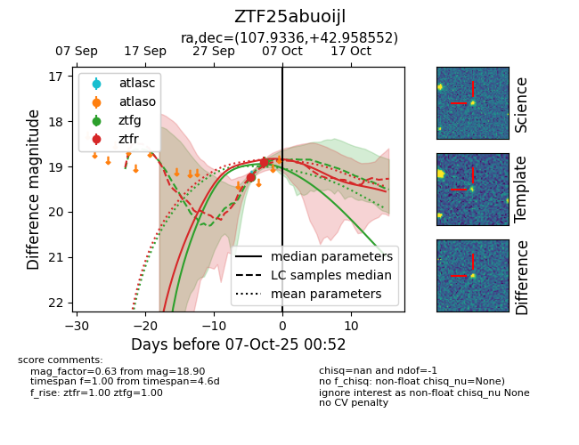
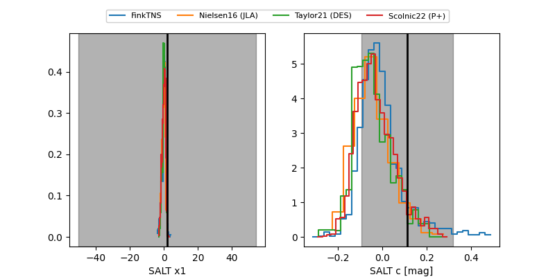

FINK: ZTF25abuoijl
Lasair: ZTF25abuoijl
ALeRCE: ZTF25abuoijl
ZTF25abuoijl (ztf,fink)
equatorial (ra, dec) = (107.9336,+42.95855)
galactic (l, b) = (174.5704,+21.61360)


last ztfg=18.90, ztfr=18.91
2 ztfg, 2 ztfr detections